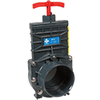
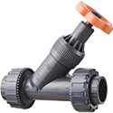

Gate Valves
Discover Harrington's range of high-quality gate valves. We carry a large selection of brands, style options, connection types, materials, and specifications. Gate valves are ideal for starting and stopping liquid flow (used for on or off control). Our materials include PVC and polypropylene. Select your product to request a quote, get additional information, and purchasing options.
 Spears 2" PVC Gate Valve with FKM seals, Flange Endsper EA · Sign in for price
Spears 2" PVC Gate Valve with FKM seals, Flange Endsper EA · Sign in for price- Spears 2" CPVC Gate Valve with FKM seals, Flange Endsper EA · Sign in for price
 Spears 2-1/2" PVC Gate Valve with FKM seals, and Flange endsper EA · Sign in for price
Spears 2-1/2" PVC Gate Valve with FKM seals, and Flange endsper EA · Sign in for price- Spears 2-1/2" CPVC Gate Valve with FKM seals, and Flange endsper EA · Sign in for price
- Spears 3" PVC Gate Valve with FKM seals, Flange Endsper EA · Sign in for price
- Spears 3" CPVC Gate Valve with FKM seals, Flange Endsper EA · Sign in for price
- Spears 4" PVC Gate Valve with FKM seals, Flange Endsper EA · Sign in for price
- Spears 4" CPVC Gate Valve with FKM seals, Flange Endsper EA · Sign in for price

Praher 3" Knife Gate Valve, Socket Connection, PVC Body, EPDM Seal, Stainless Steel Shaft, 40 psi @ 73° Fper EA · Sign in for price- Praher 4" Knife Gate Valve, Socket Connection, PVC Body, EPDM Seal, Stainless Steel Shaft, 40 psi @ 73° Fper EA · Sign in for price
- Spears 1-1/2" PVC Gate Valve with EPDM seals, Flange Endsper EA · Sign in for price
- Spears 3/4" PVC Gate Valve with FKM seals, Reinforced FPT Endsper EA · Sign in for price
- Spears 3/4" CPVC Gate Valve with FKM seals, Socket Endsper EA · Sign in for price

IPEX VV Series, 1/2" Angle Seat Valve with PVC Body & Socket/FPT Endsper EA · Sign in for price- IPEX VV Series, 3/4" Angle Seat Valve with PVC Body & Socket/FPT Endsper EA · Sign in for price
- IPEX VV Series, 1" Angle Seat Valve with PVC Body & Socket/FPT Endsper EA · Sign in for price
- IPEX VV Series, 1-1/4" Angle Seat Valve with PVC Body & Socket/FPT Endsper EA · Sign in for price
- IPEX VV Series, 1-1/2" Angle Seat Valve with PVC Body & Socket/FPT Endsper EA · Sign in for price
- IPEX VV Series, 2" Angle Seat Valve with PVC Body & Socket/FPT Endsper EA · Sign in for price